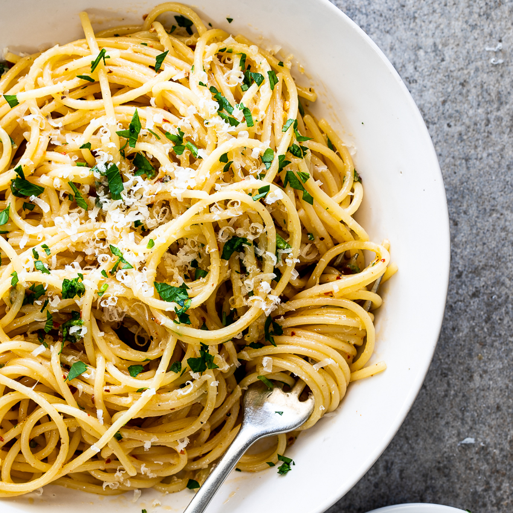

Spaghetti Aglio e Olio

Description
Spaghetti Aglio e Olio, has become my comfort food, and I am so grateful for it as it is so easy to make in my time of need!
"Spaghetti Aglio e Olio" translates to spaghetti, garlic, and oil, but there is so much more to that. To be exact, it is a mixture of roasted garlic, tossed in olive oil, with Parmigiano-Reggiano cheese, parsley, and hint of lemon that makes this dish the best thing ever!
In addition, you can make this dish spicy!
Ingredients
- 1 pound of cooked pasta
- 6 cloves of garlic, thinly sliced
- 1/2 cup of olive oil
- 1/2 a lemon
- Red pepper flakes, to taste
- Salt and freshly ground black pepper, to taste
- 1/4 cup of chopped fresh Italian parsley
- 1/2 cup finely grated Parmigiano-Reggiano cheese
Directions
- In a cold skillet, combine garlic and olive oil.
- Cook over medium heat until garlic is golden brown, nice and crispy, about 10 minutes.
- Remove from heat.
- Stir red pepper flakes, and let it sit there for 30 seconds.
- Add the cooked pasta onto the skillet.
- Add black pepper, salt, parsley, Parmigiano-Reggiano cheese, and mix.
- Squeeze half a lemon onto the pasta.
- Serve immediately.
Tips
- Can make it spicier by adding red pepper flakes.
- Can sprinkle more Parmigiano-Reggiano cheese.
Go Home